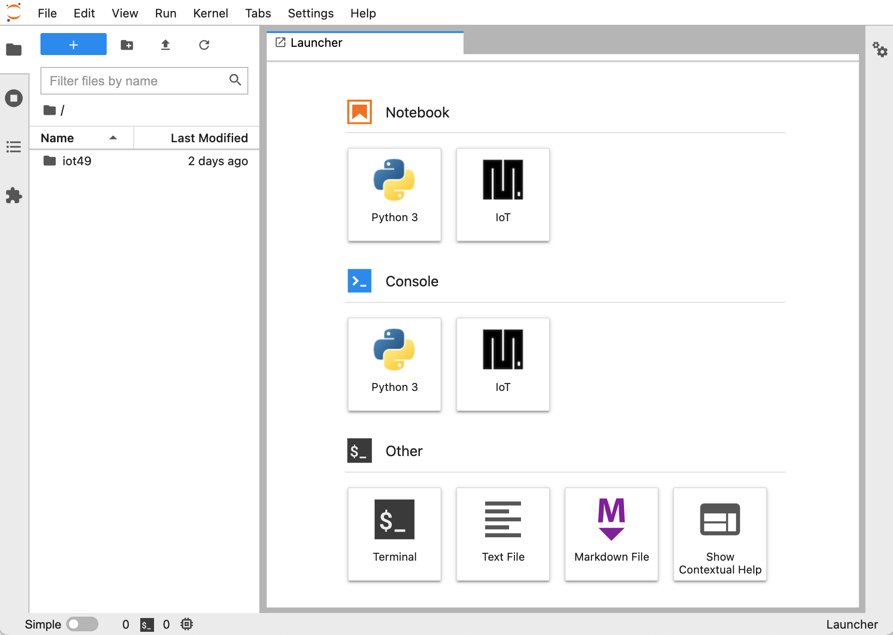

Install ide49¶
ide49 is an environment for developing IoT applications on Microcontrollers over the Internet. It runs on a Raspberry PI. To install it, you need the following:
Hardware
Raspberry PI 4 (2GBytes suffice for iot49).
SD Card with at least 16GBytes. A good quality card is highly recommended (Sandisk, Samsung, etc).
A host computer (e.g. a laptop) with an SD Card slot (only used for installation)
Software
Web-browser (e.g. Chrome)
Balena Etcher, available for Mac, Window, and Linux (free)
1. Download Balena OS
Open the ide49 repository on github and click the

button. Create a (free) account for balena.io or login to your existing account.
In the popup window, choose a name for your application (e.g. ide49). Click advanced and set the timezone (TZ) to the desired value. Click here for a list of valid TZ names. Click Create and Deploy.
Leave the other variables at their defaults (they can be changed later) and click Create and Deploy. The browser is redirected to the Balena dashboard for the ide49 application. Click + Add device. You get another popup:
under edition, select
Developmentclick the
Wifi + Ethernetbutton and enter your WiFi credentials
Accept the defaults for everything else and hit the Download balenaOS button. Keep the browser window open.
2. Flash Balena OS to SD Card
Once the download finishes, start the Balena Etcher to flash the downloaded zip-file to an SD Card. Insert the card in your computer (laptop), click Flash from file and choose the balena-cloud … img.zip, choose the SD Card as target and hit Flash. You may be asked to enter the administrator password to enable the flash.
3. Install ide49 on the Raspberry PI
Remove the SD Card from the host and insert it into the Raspberry PI, power up the device. It will automatically configure the OS. Head back to the browser window with the Balena dashboard and wait a few minutes for the new device to appear.

The new device has some creative name (like hidden-sun). Click on the device name. The top of the page show poetic device name. Click the pencil to change it. Also listed are some statistics of your Raspberry PI (memory usage, device temperature, local ip address, etc).

Click the application name in the Balena dashboard and wait for the release to complete (about twenty minutes). Once it’s complete, the Raspberry PI will automatically download it. You can see the progress in the device window with populates itself with a list of services.

After the download completes the application will automatically start.
4. Connect to the Raspberry PI
Once the download completes and the application started (as indicated in the device dashboard), connect to the Raspberry PI at http://iot49.local.
If this does not work, try http://LOCAL_IP_ADDRESS instead. Substitute the value LOCAL_IP_ADDRESS with the address shown on the device dashboard.

Click on Jupyter. You will get a warning similar to:

Click “Advanced” and then “proceed anyway”. The page on https has information about this warning and explains how to get rid of it.
At the login window, enter the default username and password are (both iot49; see Change Password to change).

Proceed to the next section, Getting Started.
5. Turning off the Raspberry PI
To turn off your Raspberry PI don’t just pull the power cord. Instead head to the dashboard on https://balena.io. At the top right is a button. Click it to get several options, including shutdown.